| Decision | \(H_0\) True | \(H_1\) True |
|---|---|---|
| \(T=0\) | True Negative (TN) |
False Negative (FN)
|
| \(T=1\) |
False Positive (FP)
|
True Positive (TP) |
Objective: Test if Bob is cheating with a dice.
Experiment: Bob rolls the dice \(10\) times.
Hypotheses:
Decision Rule: The probability of getting a number of \(6\) at least equal to the number of observed \(6\) is \(< 0.05\)
Data: The dice falls \(10\) times on \(6\)
Decision: The probability is \(1/6^{10} < 0.05\)
Conclusion ?
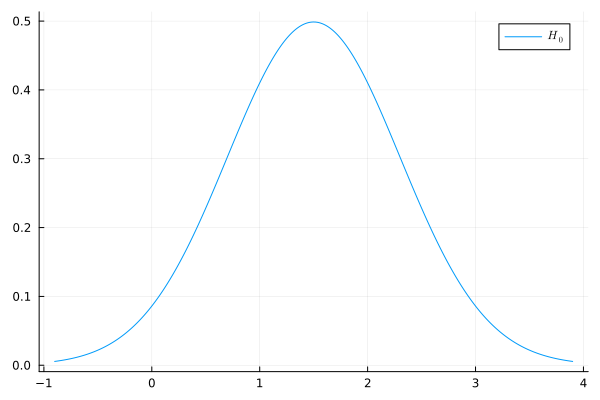
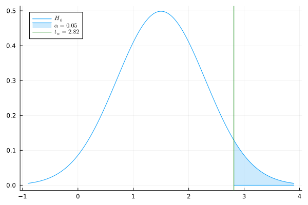
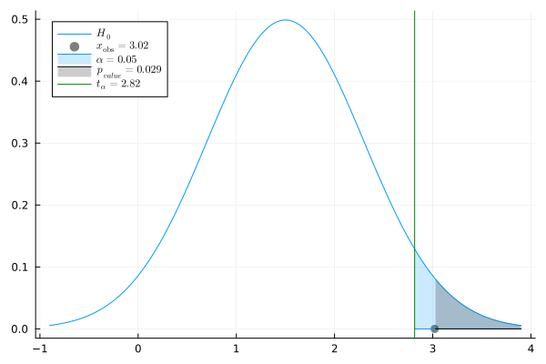
Goal: Estimate a given function of \(P_{\theta}\), e.g.:
Two sets of distributions \(\mathcal P_0\), \(\mathcal P_1\)
Parameterized by disjoints \(\Theta_0\), \(\Theta_1\) \[ \begin{aligned} \mathcal P_0 = \{P_{\theta} : \theta \in \Theta_1\}, ~~~~ \mathcal P_1 = \{P_{\theta} : \theta \in \Theta_1\}\; . \end{aligned} \]
\(\exists \theta \in \Theta_0 \cup \Theta_1\) such that \(X \sim P_{\theta}\)
Goal: Decide between \[H_0: \theta \in \Theta_0 \text{ or } H_1: \theta \in \Theta_1\]
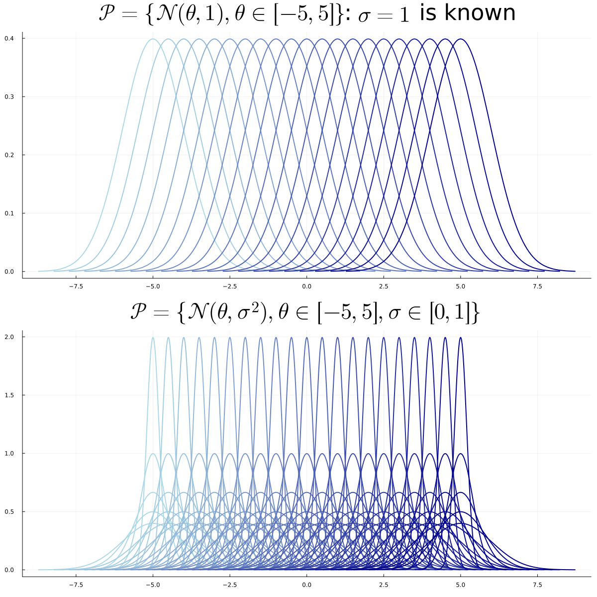
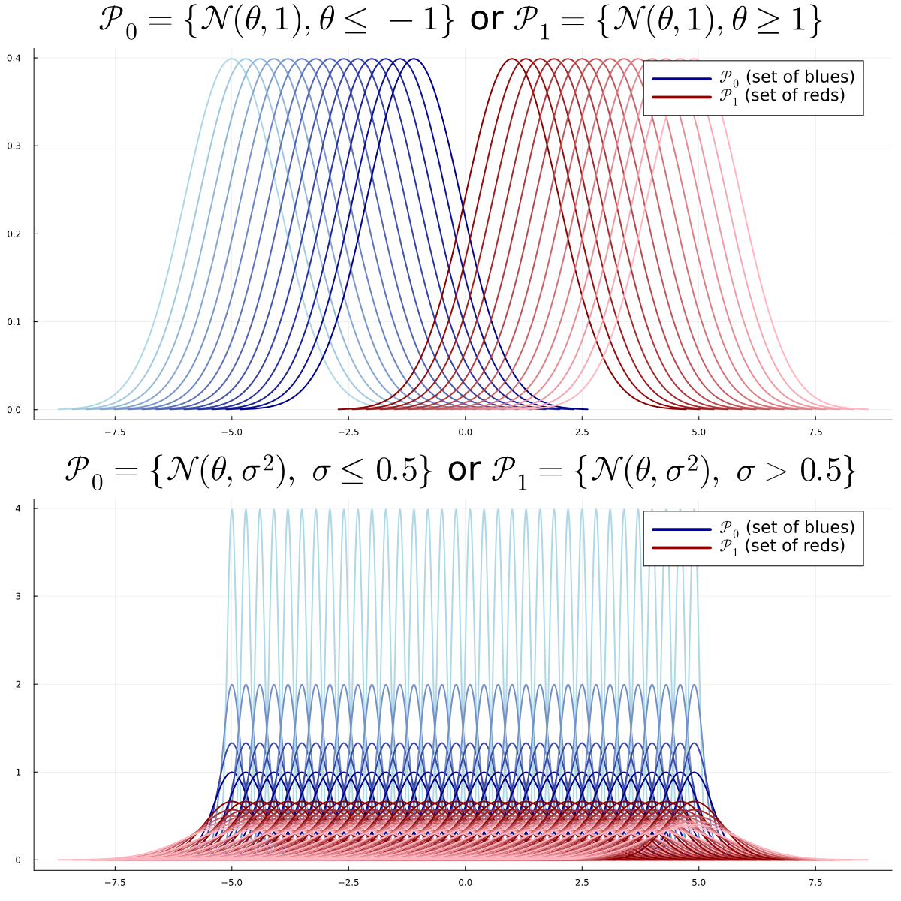
Two sets of distributions \(\mathcal P_0\), \(\mathcal P_1\)
Parameterized by disjoints \(\Theta_0\), \(\Theta_1\) \[ \begin{aligned} \mathcal P_0 = \{P_{\theta} : \theta \in \Theta_1\}, ~~~~ \mathcal P_1 = \{P_{\theta} : \theta \in \Theta_1\}\; . \end{aligned} \]
\(\exists \theta \in \Theta_0 \cup \Theta_1\) such that \(X \sim P_{\theta}\)
Goal: Decide between \[H_0: \theta \in \Theta_0 \text{ or } H_1: \theta \in \Theta_1\]
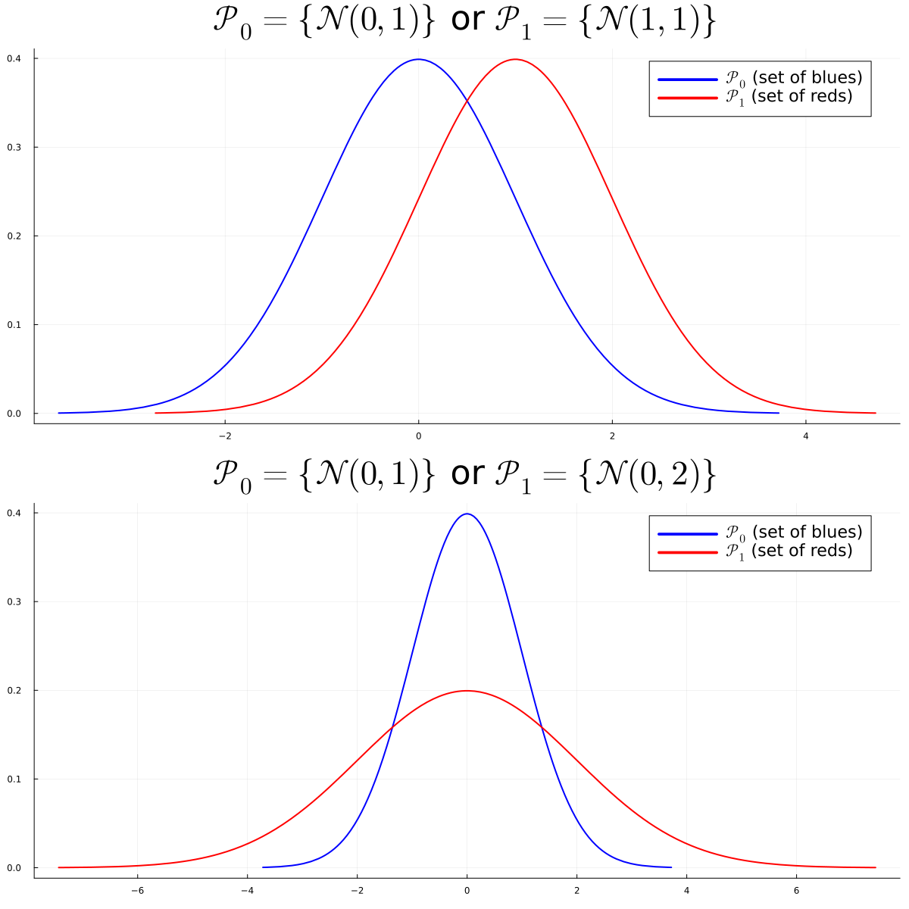
Example of Multiple VS Multiple Parametric Problem:
Decision Rule
A Decision Rule or Test \(T\) is a measurable function from \(\mathcal X\) to \(\{0,1\}\): \[ T : \mathcal X \to \{0,1\}\; .\]
It can depend on the sets \(\mathcal P_0\) and \(\mathcal P_1\)
but not on any unknown parameter.
\(T(x) = 0\) (or \(1\)) for all \(x\) is the trivial decision rule. Question: Decision Rule
Test Statistic
a Test Statistic \(\psi\) is a measurable function from \(\mathcal X\) to \(\mathbb R\): \[ \psi : \mathcal X \to \mathbb R\; .\]
It can depend on the sets \(\mathcal P_0\) and \(\mathcal P_1\)
but not on any unknown parameter. Question: Test Statistic
Consider a probability measure \(P\) on \(\mathbb R\).
density wrp to Lebesgue: \(dP(x) = p(x)dx\)
PDF (Proba Density Function): \(x \to p(x)\)
CDF: \(x \to \int_{\infty}^x p(x')dx'\)
\(\alpha\)-quantile \(q_{\alpha}\): \(\int_{\infty}^{q_{\alpha}} p(x)dx = \alpha\)
or \(\mathbb P(X \leq q_{\alpha} = \alpha)\)
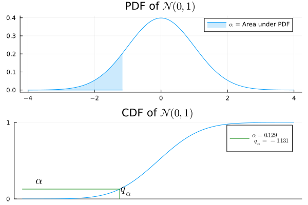
Approximation of sum of iid RV (TCL)
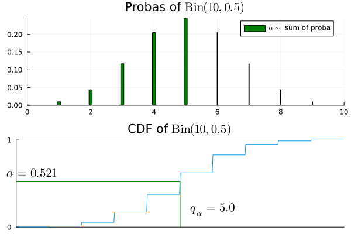
Number of success among \(n\) Bernoulli \(q\)
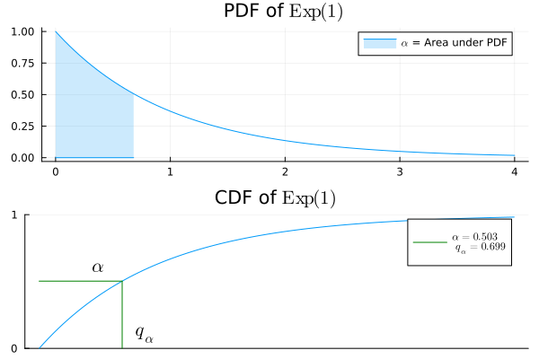
Waiting time for an atomic clock of rate \(\lambda\)
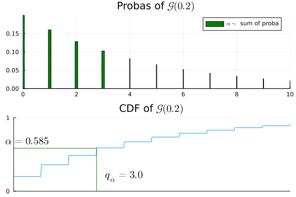
Index of first success for iid Bernoulli \(q\)
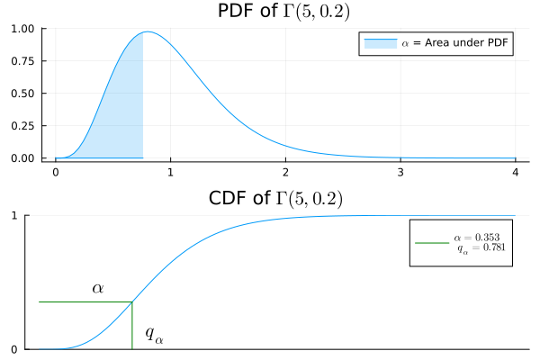
Waiting time for \(k\) atomic clocks of rate \(\tfrac{1}{\theta}\)
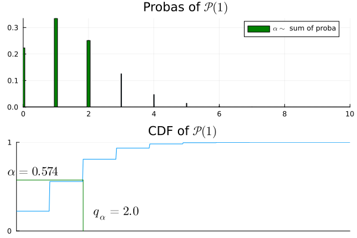
Number of tics before time \(1\) of an atomic clock of rate \(\lambda\)
For a given test \(T\) we define:
| Decision | \(H_0: X \sim P\) | \(H_1: X \sim Q\) |
|---|---|---|
| \(T=0\) | \(1-\alpha\) | \(1-\beta\) |
| \(T=1\) | \(\alpha\) | \(\beta\) |
Test \(T\) that maximizes \(\beta\) at fixed \(\alpha\) ?
Idea: Consider the likelihood ratio test statistic \[\psi(x)=\frac{dQ}{dP}(x) = \frac{q(x)}{p(x)}\]
We consider the likelihood ratio test \[ T^*(x)=\mathbf 1\left\{\frac{q(x)}{p(x)} > t_{\alpha}\right\} \;\]
\(t_{\alpha}\) is the \(\alpha\)-quantile of the distrib \(\frac{q(X)}{p(X)}\) if \(X\sim P\) \[ \mathbb P_{X \sim P}\left(\frac{q(X)}{p(X)} > t_{\alpha}\right) = \alpha\]
| Decision | \(H_0: X \sim P\) | \(H_1: X \sim Q\) |
|---|---|---|
| \(T=0\) | \(1-\alpha\) | \(1-\beta\) |
| \(T=1\) | \(\alpha\) | \(\beta\) |
Neyman Pearson’s Theorem
The likelihood Ratio Test of level \(\alpha\) maximizes the power among all tests of level \(\alpha\).
| Decision | \(H_0: X \sim P\) | \(H_1: X \sim Q\) |
|---|---|---|
| \(T=0\) | \(1-\alpha\) | \(1-\beta\) |
| \(T=1\) | \(\alpha\) | \(\beta\) |
\[ T^*(x)=\mathbf 1\left\{\frac{q(x)}{p(x)} > t_{\alpha}\right\} \;\]
Where, if \(X\sim P\), \[ P(T^*(X)=1)=\mathbb P_{X \sim P}\left(\frac{q(X)}{p(X)} > t_{\alpha}\right) = \alpha\]
Equivalent to Log-Likelihood Ratio Test: \[T^*(x)=\mathbf 1\left\{\log\left(\frac{q(x)}{p(x)}\right) > \log(t_{\alpha})\right\}\]
Let \(P_{\theta}\) be the distribution \(\mathcal N(\theta,1)\).
Observe \(n\) iid data \(X = (X_1, \dots, X_n)\)
\(H_0: X \sim P^{\otimes n}_{\theta_0}\) or \(H_1: X \sim P^{\otimes n}_{\theta_1}\)
Remark: \(P^{\otimes n}_{\theta}= \mathcal N((\theta,\dots, \theta), I_n)\)
Density of \(P^{\otimes n}_{\theta}\):
\[ \begin{aligned} \frac{d P^{\otimes n}_{\theta}}{dx} &= \frac{d P_{\theta}}{dx_1}\dots\frac{d P_{\theta}}{dx_n} \\ &= \frac{1}{\sqrt{2\pi}^n}\exp\left({-\sum_{i=1}^n\frac{(x_i - \theta)^2}{2}}\right) \\ &= \frac{1}{\sqrt{2\pi}^n}\exp\left(-\frac{\|x\|^2}{2} + n\theta \overline x - \frac{\theta^2}{2}\right)\; . \end{aligned} \]
Log-Likelihood Ratio Test:
\(T(x) = \mathbf 1\{\overline x > t_{\alpha}\}\) if \(\theta_1 > \theta_0\)
\(T(x) = \mathbf 1\{\overline x < t_{\alpha}\}\) otherwise
A set of distributions \(\{P_{\theta}\}\) is an exponential family if each density \(p_{\theta}(x)\) is of the form \[ p_{\theta}(x) = a(\theta)b(x) \exp(c(\theta)d(x)) \; , \]
We observe \(X = (X_1, \dots, X_n)\). Consider the following testing problem: \[H_0: X \sim P_{\theta_0}^{\otimes n}~~~~ \text{or}~~~~ H_1:X \sim P_{\theta_1}^{\otimes n} \; .\]
Likelihood Ratio: \[ \frac{dP^{\otimes n}_{\theta_1}}{dP^{\otimes n}_{\theta_0}} = \left(\frac{a(\theta_1)}{a(\theta_0)}\right)^n\exp\left((c(\theta_1)-c(\theta_0))\sum_{i=1}^n d(x_i)\right) \; . \]
Likelihood Ratio Test: (Q: Select Exp. Families) \[ T(X) = \mathbf 1\left\{\frac{1}{n}\sum_{i=1}^n d(X_i) > t\right\} \;. ~~~~\text{(calibrate $t$)}\]
The number of particle emitted in \(1\) unit of time is follows distribution \(P \sim \mathcal P(\lambda)\).
We observe \(20\) time units, that is \(N \sim \mathcal P(20\lambda)\).
Type A sources emit an average of \(\lambda_0 = 0.6\) particles/time unit
Type B sources emit an average of \(\lambda_1 = 0.8\) particles/time unit
\(H_0\): \(N \sim \mathcal P(20\lambda_0)\) or \(H_1\): \(N\sim \mathcal P(20\lambda_1)\)
Likelihood Ratio Test: \[T(X)=\mathbf 1\left\{\sum_{i=1}^{20}X_i > t_{\alpha}\right\} \; .\]
\(t_{0.95}\): quantile(Poisson(20*0.6), 0.95) gives \(18\)
\(\mathbb P(\mathcal P(20*0.6) \leq 17)\): 1-cdf(Poisson(20*0.6), 17) gives \(0.063\)
\(\mathbb P(\mathcal P(20*0.6) \leq 18)\): 1-cdf(Poisson(20*0.6), 18) gives \(0.038\): Reject if \(N \geq 19\)
Assumption: \(\Theta_0 \cup \Theta_1 \subset \mathbb R\).
One-Sided Tests: \[ \begin{aligned} H_0: \theta \leq \theta_0 ~~~~ &\text{ or } ~~~ H_1: \theta > \theta_0 ~~~ \text{(One-Sided Right: unilatéral droit)}\\ H_0: \theta \geq \theta_0 ~~~ &\text{ or } ~~~ H_1: \theta < \theta_0 ~~~ \text{(One-Sided Left: uniilatéral gauche)} \end{aligned} \]
Two-Sided Tests: \[ \begin{aligned} H_0: \theta = \theta_0 ~~~ &\text{ or } ~~~ H_1: \theta \neq \theta_0 ~~~ \text{(Simple/Multiple)}\\ H_0: \theta \in [\theta_1, \theta_2] ~~~ &\text{ or } ~~~ H_1: \theta \not \in [\theta_1, \theta_2] ~~~ \text{( Multiple/Multiple)} \end{aligned} \]
Theorem
Pivotal Test Statistic
\(\psi: \mathcal X \to \mathbb R\) is pivotal if the distribution of \(\psi(X)\) under \(H_0\) does not depend on \(\theta \in \Theta_0\):
for any \(\theta, \theta' \in \Theta_0\), and any event \(A\), \[ \mathbb P_{\theta}(\psi(X) \in A) = \mathbb P_{\theta'}(\psi(X) \in A) \; .\]
pvalue under \(H_0\)
Under \(H_0\), for a pivotal test statistic \(\psi\), \(\mathrm{pvalue}(X)\) has a uniform distribution \(\mathcal U([0,1])\).